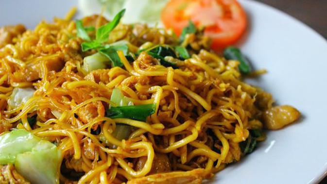

Soto Ayam

Soto merupakan salah satu resep masakan Indonesia yang mempunyai banyak variasi, soto ayam, soto daging, soto babat, soto sulung, soto Betawi, soto mie dan masih banyak lagi. Variasi tersebut bisa berdasarkan bahan/isi, tambahan bumbu atau tempat di mana resep itu berasal.Resep yang kami pilih adalah resep soto ayam bening yang biasa dimasak sebagai masakan rumahan keluarga Indonesia. Selengkapnya →
Mie Goreng
Mie goreng mungkin bukan masakan asli Indonesia, tapi sudah menjadi resep masakan Indonesia yang sangat populer dan disukai hampir semua masyarakat Indonesia mulai dari anak-anak sampai orang tua. Resep berikut mudah dan praktis, yuk dicoba. Selengkapnya →